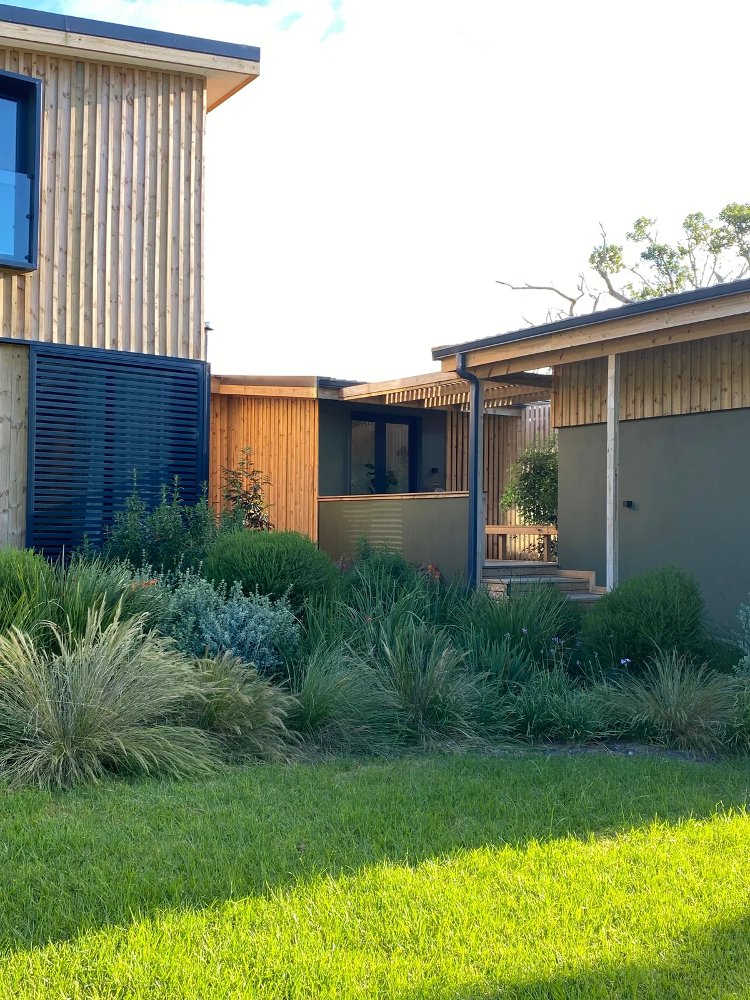

Indigenous Garden Design on the Garden Route
An indigenous garden on the Garden Route is not simply a garden filled with local plants. Done well, it is a designed landscape that draws on the ecological relationships, structural layers, and seasonal rhythms of the surrounding biome — creating something that looks as though it belongs to the place, because it genuinely does. Six Kingdoms designs indigenous gardens that are beautiful, ecologically appropriate, and tailored to their specific location on the Garden Route.

Why Design With Indigenous Plants?
The case for indigenous planting on the Garden Route goes well beyond aesthetics or environmental principle. There are practical, compelling reasons why indigenous plants belong in Garden Route gardens:
- Water efficiency — plants adapted to the local rainfall regime require significantly less supplementary irrigation once established, reducing water bills and water stress on the broader catchment
- Low maintenance — indigenous plants are not adapted to high-nutrient conditions; they do not need regular fertilising, and many require pruning only for aesthetic purposes
- Biodiversity value — each indigenous plant species supports a web of insects, birds, reptiles, and small mammals that have co-evolved with it; an indigenous garden becomes a functioning habitat
- Resilience — indigenous species are adapted to local climate extremes, pests, and diseases; they are far more robust than exotic equivalents under Garden Route conditions
- Property value — in the eco-estate and second-home markets that characterise much of the Garden Route, a professionally designed indigenous garden is an increasingly valued asset
Reading the Biome: Design Starts With Context
The Garden Route spans three distinct biomes, and any indigenous garden design must start by understanding which biome applies to the specific site — and, often, the specific corner of the property, since biome transitions on South African landscapes can be very abrupt.
The three biome contexts that Six Kingdoms designs within on the Garden Route are:
- Fynbos — the dominant biome on the Cape coastal plains, mountain slopes, and sandy lowlands. Characterised by hard-leafed, nutrient-poor-adapted shrubs including proteas, ericas, leucadendrons, and restios. This is the domain of the Cape Floristic Region, one of the world's six floristic kingdoms, with extraordinary plant diversity and endemism.
- Afrotemperate forest — the moist forest patches found in deep kloofs and sheltered south-facing slopes. Dominated by tall canopy species including Outeniqua Yellowwood (Afrocarpus falcatus), Ironwood (Olea capensis), Cape Beech (Rapanea melanophloeos), and Wild Peach (Kiggelaria africana). Garden design in or adjacent to forest contexts draws on the rich understorey planting palette of forest floor species, tree ferns, and climbing plants.
- Transitional thicket and valley bushveld — found in rain-shadow valleys and on north-facing slopes, particularly in the Knysna hinterland and between Mossel Bay and George. Characterised by denser, more succulent-influenced shrub communities including spekboom (Portulacaria afra), spiny restios, and various aloe species.
Getting this biome reading right is the most important design decision. A garden planted with fynbos species on a deep, moist forest-margin soil will struggle; conversely, forest understory plants will not thrive in the full-sun, well-drained conditions of a coastal fynbos setting.
The Terra Verta Habitats Project
The Terra Verta Habitats project is one of Six Kingdoms' most ambitious indigenous garden design commissions on the Garden Route. The brief was to design a multi-zone indigenous garden across a large residential property that transitioned from an established garden around the house through to a managed fynbos habitat in the outer zones, with connections to an adjacent nature reserve.
The design process began with a detailed ecological assessment of the existing vegetation, identifying remnant indigenous species of value that could be retained and incorporated, zones of invasive plant infestation requiring clearance, and the biome transitions across the property.
The planting design used a layered approach: tall structural species (proteaceous shrubs and ornamental restios) as the framework, mid-layer flowering shrubs for seasonal colour and insect value, and low ground-layer species to suppress re-invasion and create textural interest at ground level. Within two years, the property was attracting meaningful populations of sunbirds, sugarbirds, and endemic Garden Route bird species that had not been recorded on site before. View our full ecological design portfolio →
Designing for Wildlife
One of the most rewarding dimensions of indigenous garden design on the Garden Route is the rapidity with which wildlife responds to appropriate planting. Sunbirds (particularly the Orange-breasted and Southern Double-collared Sunbird) are attracted almost immediately to flowering ericas and proteas. Cape sugarbirds arrive at proteas in autumn. Geometric tortoise, Cape dwarf chameleon, and various gecko species colonise rockery plantings that provide the shelter structures they need.
Six Kingdoms designs specifically for wildlife value, incorporating habitat features such as brush piles (insect habitat), rock arrangements (reptile refuges), shallow water features (amphibians, insects, birds), and a mix of early and late-season flowering species (to provide nectar across the full year). The result is a garden that functions as a small nature reserve rather than a maintained green space.
Invasive Plant Control as the Foundation
On most Garden Route properties, indigenous garden design cannot happen in isolation from invasive plant management. The planting design is only as good as the ongoing control of reinvasion from surrounding invasive seed sources. Six Kingdoms integrates invasive plant management into every indigenous garden project as a foundational, ongoing element — not an afterthought. Learn about our invasive plant clearing services →
Long-Term Care and Adaptive Management
An indigenous garden in its first two years is a garden in establishment. It does not look like the finished landscape. Plants are finding their root systems, settling into the soil chemistry, and beginning to interact with the local fauna. Clients who want instant impact often find indigenous gardens frustrating in this phase. But those who commit to the three-to-five-year establishment period are consistently rewarded with a landscape that genuinely comes alive.
Six Kingdoms provides post-installation care programmes that include monitoring, adaptive management (adjusting planting where species have not performed as expected), and ongoing invasive species control. We also provide guidance on low-intervention maintenance so that property owners or their garden staff can sustain the garden between Six Kingdoms visits.
Starting an Indigenous Garden Project
Every indigenous garden project begins with a site visit and consultation. We spend time on the property, read the ecology, discuss the client's brief, and provide a design proposal that is genuinely specific to the site rather than a generic template. If you are on the Garden Route and interested in transforming your garden into an indigenous landscape, we would like to hear from you. Contact Six Kingdoms to start the conversation →
Design a Garden That Belongs to Its Place
Six Kingdoms creates indigenous garden designs across the Garden Route — ecologically authentic, visually compelling, and built to last.
Start a Conversation →